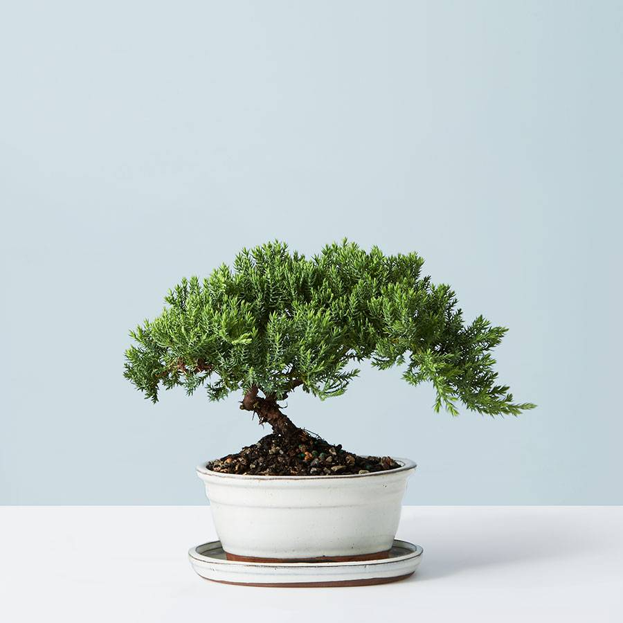

Saturday May 23, 2020
I bought a bonsai tree to water it on twitter
Meet alfred, a juniper bonsai tree. A raspberry pi with a camera running a twitter bot script automated through crontab will take a photo of Alfred everyday at 9:01am. Enjoy this stock photo in the mean time while Alfred is in the mail, also follow Alfred on twitter @is_alfred_alive. If you want you can check out the code here.
 Tweets by is_alfred_alive